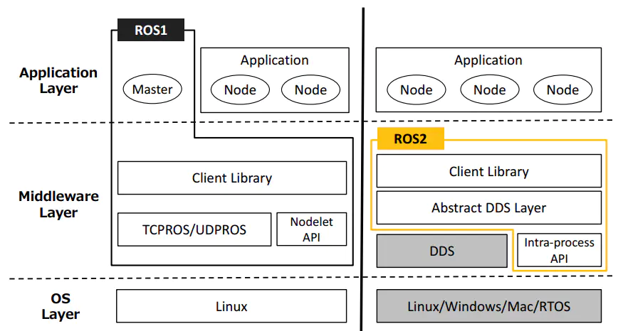

1.1. Introduction to ROS2
ROS2's predecessor is ROS, which stands for Robot Operating System. However, ROS itself is not an operating system, but a software library and tool set. The emergence of ROS solved the communication problem of various robot components. Later, more and more robot algorithms were integrated into ROS. ROS2 inherited ROS and is more powerful and easier to use than ROS.
1.2. 1 Design goals and features of ROS2
ROS2 shoulders the historical mission of changing the era of intelligent robots. At the beginning of the design, it was considered to meet the needs of various robot applications.
Multi-robot system: In the future, robots are no longer independent individuals, and robots also need to communicate and collaborate. ROS2 provides standard methods and communication mechanisms for the application of multi-robot systems.
Cross-platform: The control platforms used will be very different in different robot application scenarios. In order to enable all robots to run ROS2, ROS2 can run cross-platform on Linux, Windows, MacOS, and RTOS.
Real-time: Robot motion control and many behavioral strategies require robots to be real-time. For example, a robot must reliably detect pedestrians in front of it within 100 milliseconds, or complete kinematic and dynamic calculations within 1 millisecond. ROS2 provides basic requirements in real time like this.
Productization: A large number of robots have entered our lives, and there will be more and more in the future. ROS2 can not only be used in the robot R&D stage, but can also be directly installed in products and enter the consumer market. This also poses a huge challenge to the stability and robustness of ROS2.
Project management: Robot development is a complex system engineering. Project management tools and mechanisms for the entire process of design, development, debugging, testing, and deployment will also be reflected in ROS2, making it easier for us to develop robots.
1.3. 2 Release version
The corresponding release version and maintenance cycle of ROS2 and Ubuntu.
| ROS2 version | Release date | Maintenance period | Ubuntu version |
|---|---|---|---|
| Dashing | 2019.5 | 2021.5 | Ubuntu 18.04 (Bionic Beaver) |
| Eloquent | 2019.11 | 2020.11 | Ubuntu 18.04 (Bionic Beaver) |
| Foxy | 2020.6 | 2023.5 | Ubuntu 20.04(Focal Fossa) |
| Galactic | 2021.5 | 2022.11 | Ubuntu 20.04(Focal Fossa) |
| Humble | 2022.5 | 2027.5 | Ubuntu 22.04(Jammy Jellyfish) |
1.4. 3 Comparison between ROS and ROS2
ROS2 redesigned the system architecture. The architectural changes between the two generations of ROS are as follows:

OS Layer: OS layer. In ROS2, it can be built on Linux or other systems, even bare metal without an operating system.
Middleware Layer: Middleware layer. The communication system of ROS1 is based on TCPROS/UDPROS, while the communication system of ROS2 is based on DDS. DDS is a standard solution for data publishing/subscription in distributed real-time systems.
Application Layer: Application layer. ROS1 relies on ROS Master, while in ROS2, a discovery mechanism called "Discovery" is used between nodes to help each other establish connections.
ROS has designed a complete set of communication mechanisms (topics, services, parameters, actions) to simplify robot development. Through this mechanism, the various components of the robot can be connected. This mechanism designs a node called Ros Master, and the communication of all other components must go through the master node. Once the master node hangs up, it will cause the communication of the entire robot system to collapse! Therefore, the instability of Ros cannot be used to make some high-risk robots such as autonomous driving. In addition, there are the following disadvantages:
- TCP-based communication has poor real-time performance and high system overhead
- Not friendly to python3 support
- Incompatible message mechanism
- No encryption mechanism, low security
ROS2 first removes the master node in ROS. After removing the master node, each node can discover each other through the DDS node. Each node is equal and can achieve one-to-one, one-to-many, and many-to-many communication. After using DDS for communication, reliability and stability are enhanced.
Compared with ROS that only supports Linux systems, ROS2 also supports Windows, Mac and even RTOS platforms.